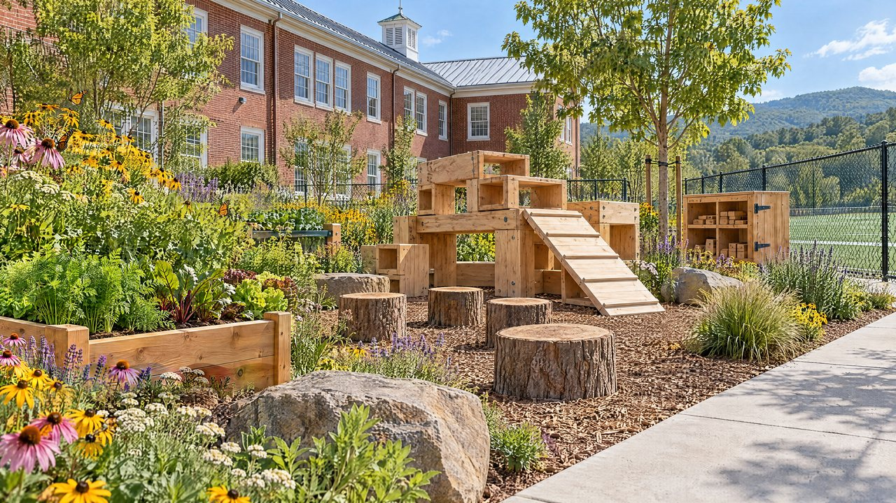
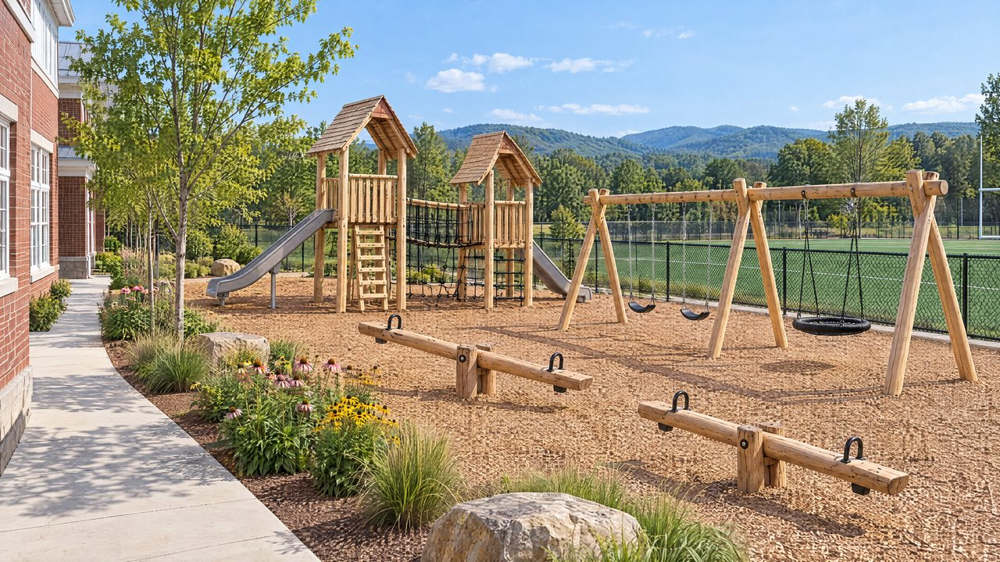
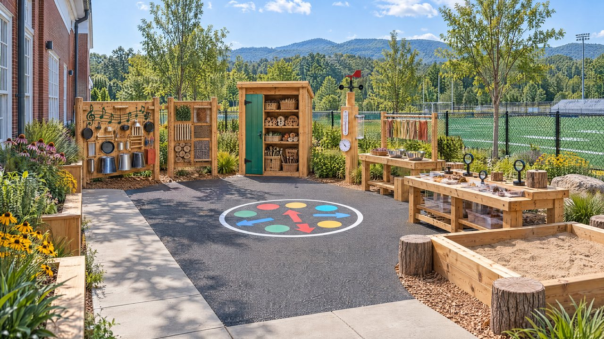
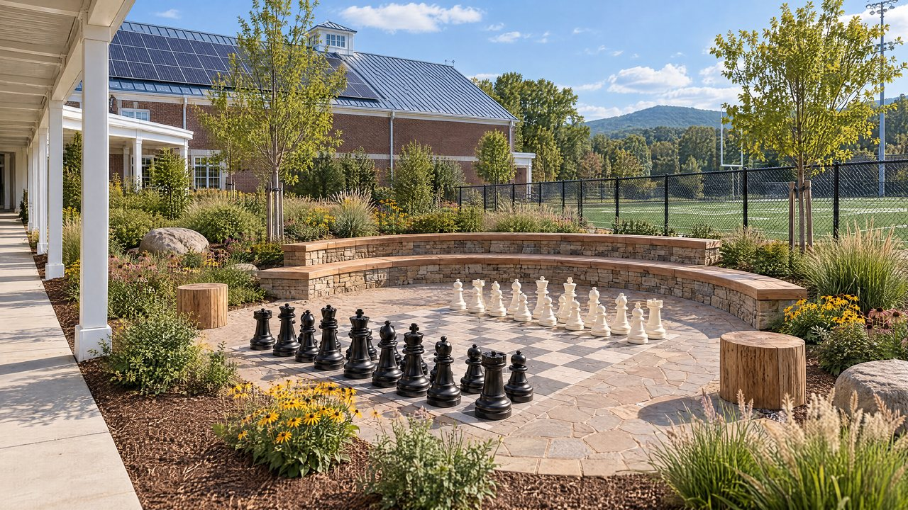

01 / CURIOSITY
A small discovery.A bigger world.
A garden becomes a laboratory. A new leaf becomes a question.
THE BUTTERFLY GARDEN

02 / CONFIDENCE
One more rung.A little braver.
Room to climb, find balance, and discover what you can do.
THE PLAY AREA

03 / POSSIBILITY
What if?Let’s find out.
A place to build, test ideas, and follow curiosity outside.
THE OUTDOOR STEM LAB

04 / BELONGING
Eight places.One place to grow.
Imagine the proposed K–4 Outdoor Learning Lab & Playground.
LEARNING BY DOING
ST. ANNE’S-BELFIELD
SUPPLIED CONCEPTUAL IMAGERY · DESIGN WILL EVOLVE